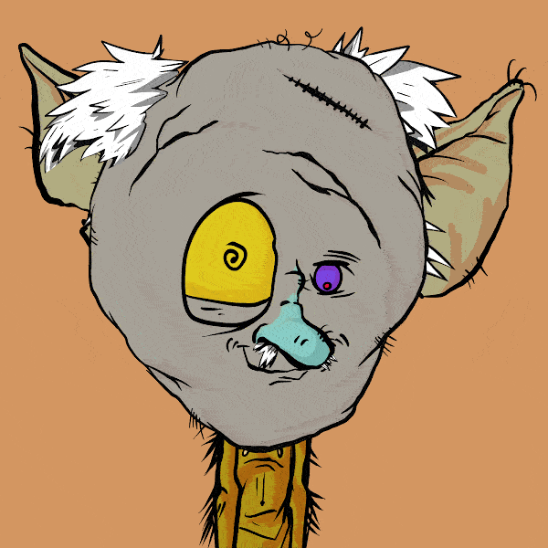 Grandpa Goblinz FREE Mint ▶ 什么是Grandpa Goblinz FREE Mint？ Grandpa Goblinz FREE Mint 是一个 NFT（非同质代币）集合。存储在区块链上的数字艺术品集合。 ▶ Grandpa Goblinz FREE Mint代币有多少？ 总共
GrandPianists Grand Pianists 囊括了每位艺术家独特的不同能力和音乐影响力。这 10,000 件独特的数字收藏品没有明确的性别，没有明确的种族，所有人都可以自由地找到代表。每个独奏音
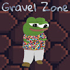 GRAVEL Gravel 是以太坊区块链上 2500 NFTS 的集合。每个 NFT 是 0.03 ETH。您一次最多可以铸币 30 枚。 ▶ 什么是砾石？ GRAVEL 是一个 NFT（不可替代代币）集合。存储在区块链上的数
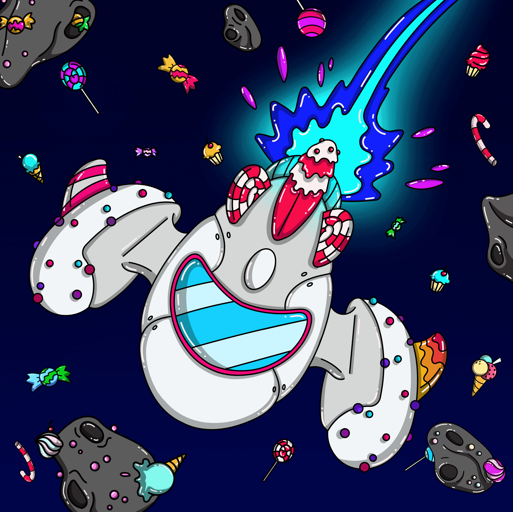 Graviless NFT Graviless NFT 是一个社区驱动的收藏品项目，由 5500 个创世纪组成。Gravis 是糖果和含糖食物的贪吃者。他们疯狂地喜欢生活在充满明亮闪亮色彩的星球上。这也是
Gray Boys: Science Lab 神秘材料离开了灰男孩科学实验室。他们的目的是什么？还有哪些其他材料离开了他们高度安全的保险库？ Gray Boys 是 10,000 个生成 NFT 的集合，它们是 The Mothership DAO 的成员。 伟
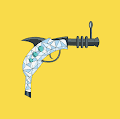 Great Ape Bananas 大猿协会-香蕉武器 强大社区的强大武器！猿强。猿联合。 由于 United ApeWarSpec 的实验，Great Ape Society 于 1968 年成立。随着时间的推移，猿类开始认识到人类对它们造成的
Great Ape Society 由于 United ApeWarSpec 的实验，Great Ape Society 于 1968 年成立。随着时间的推移，猿类开始认识到人类对它们造成的伤害。在一场史诗般的运动中，猿族长带领猿族走向自由。
Great Genesis Gorillas 由于 United ApeWarSpec 的实验，Great Ape Society 于 1968 年成立。随着时间的推移，猿类开始认识到人类对它们造成的伤害。在一场史诗般的运动中，猿族长带领猿族走向自由。
Great Meekicks Official Meebits 得到了最甜蜜的结果。有 80 多双不同的 Meebits 鞋，包括类型、颜色和尺码。每对 Meekicks 都与 20,000 个 Meebits 中的一个唯一关联，并具有自己的随机跳跃、速度和舞蹈级别。拥有
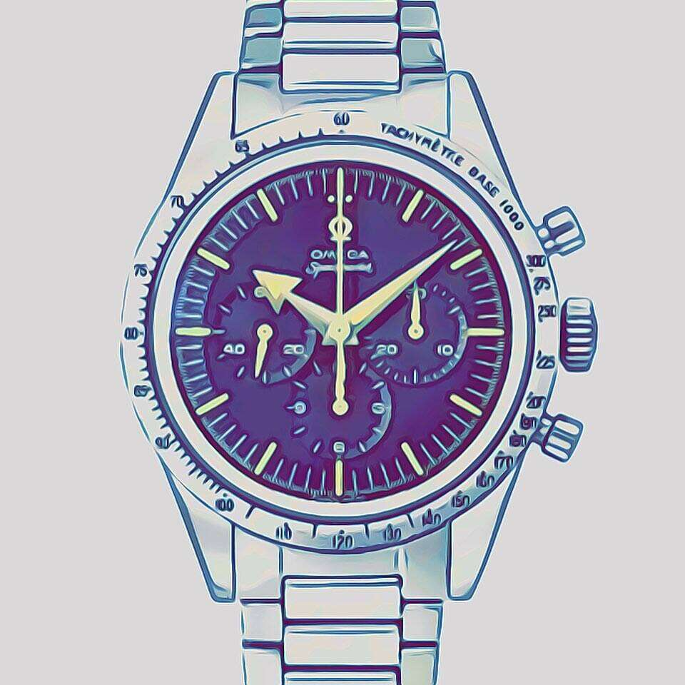 Great Omega Speedmaster Official 欢迎来到 1inAmeelionwatch！唯一一个您可以找到独特的、独一无二的手表艺术的 NFT 项目，让您有机会通过赢得稀有的奢华瑞士手表进入手表
Greedy Gramps by Gramps.io 我们未来通过 Web3 自我打磨。流行文化艺术品符合现实生活的适用性。Gramps.io 搭建了从 Web3 到现实世界的桥梁。 ▶ Gramps.io 的 Greedy Gramps 是什么？ Gramps.io 的 Greedy Gramps 是一个 N
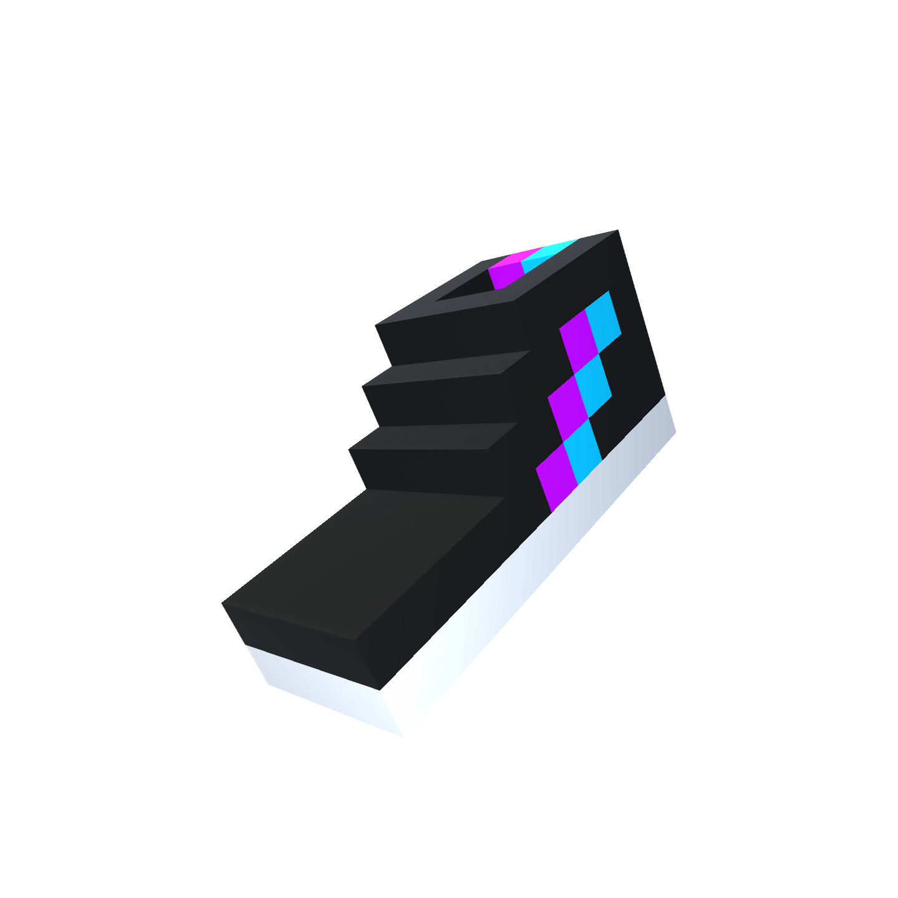 Green Meekicks Official Meebits 得到了最甜蜜的结果。有 80 多双不同的 Meebits 鞋，包括类型、颜色和尺码。每对 Meekicks 都与 20,000 个 Meebits 中的一个唯一关联，并具有自己的随机跳跃、速度和舞蹈级别。拥有
Gridcraft Genesis Identities Gridcraft Network 是一个全新的 Play & Earn 游戏元宇宙平台，适用于 PC、Xbox、PlayStation、Nintendo Switch 和移动设备。我们的使命是利用我们在游戏
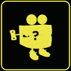 GRILLZ GANG GRILLZ GANG 是 5,555 个独特的 GRILLZ NFT 的集合，它们在以太坊区块链上闪耀。除了照亮房间之外，您的 GRILLZ 还将授予您 GRILLZ GANG 的会员资格。每个 Grillz 都是社区的钥匙。 每个 GRILLZ 都是从1
Grim Tales of a Wassie “Wassie 的恐怖故事”包含 111 幅独特的抽象艺术作品和 111 首诗歌。诗歌和艺术作品的独特组合由 Crypto Twitter 上著名的 smol wassie [研磨诗人] 精心策划。 Poet.txt 是一项将诗
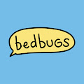 grimbogs by bedbugs “臭虫”是一个建立在和平地融入社会的基础上，同时以积极的态度将它们带入公众意识的组织。臭虫已经为那些相信 grimbogs 提供的无限可能性的人们部署了 10,000 个会
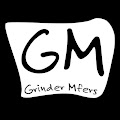 Grinder Mfers 6,969 名 Grinder Mfer 生活在以太坊区块链上。一群讨厌磨砺和构建全新方式的mfer。来自很棒的#sartoshi 的衍生项目 ▶ 什么是研磨机 Mfers？ Grinder Mfers 是一
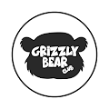 Grizzly Bear Club (GBC) Grizzly Bear 是 10,000 个独特 NFT 的集合，在 Polygon 区块链上的 ERC-721 标准中随机生成了 +250k 可能的组合。 ▶ 什么是灰熊俱乐部 (GBC)？ 灰熊俱乐部 (GBC) 是一个 NFT（不可替代代币）
GroovyMonsters ▶ 什么是 GroovyMonsters？ GroovyMonsters 是一个 NFT（非同质代币）集合。存储在区块链上的数字艺术品集合。 ▶ 有多少 GroovyMonsters 代币？ 总共有 5,555 个 GroovyMonsters NFT。
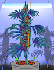 GrowOpz 500 个手绘 NFT 的集合，其中包含一些街头最经典的菌株！ ▶ 什么是 GrowOpz？ GrowOpz 是一个 NFT（非同质代币）集合。存储在区块链上的数字艺术品集合。 ▶
Grumpii Monsters Grumpii 原始怪物。 ▶ 什么是 Grumpii 怪兽？ Grumpii Monsters 是一个 NFT（非同质代币）系列。存储在区块链上的数字艺术品集合。 ▶ 有多少 Grumpii Monsters 代币？ 总共有 9 个 Grumpii Monsters NFT。目前
GrumpyPandaz GrumpyPandaz NFT 和PandaCubz NFT是存储在以太坊区块链上的独特 3D 集合🐼欢迎来到 Uppeee 生态系统🪙 ▶ 什么是 GrumpyPandaz？ GrumpyPandaz 是一个 NFT（非同
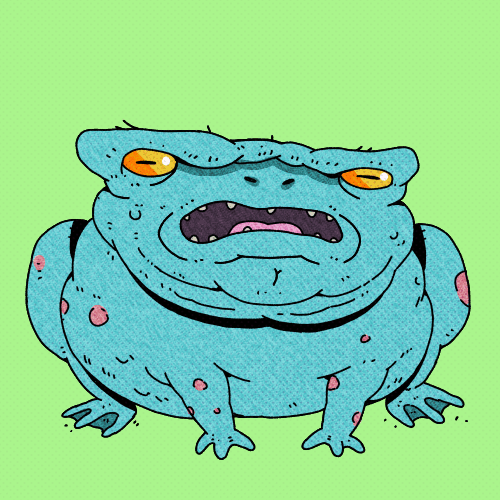 gruubub ▶ 什么是 gruubub？ gruubub 是一个 NFT（不可替代令牌）集合。存储在区块链上的数字艺术品集合。 ▶ 存在多少个 gruubub 代币？ 总共有 2,222 个 gruubub NFT。目前，1
gtburgers.wtf ▶ 什么是 gtburgers.wtf？ gtburgers.wtf 是一个 NFT（不可替代代币）集合。存储在区块链上的数字艺术品集合。 ▶ 有多少个 gtburgers.wtf 代币？ 总共有 9,999 个 gtburgers.wtf NFT
Guardians of the Metaverse Metaguardians 是 10,000 个独特的 3D 英雄般化身的集合，这些化身在区块链上以 NFT 的形式存在。监护人作为 ERC721 代币存储在以太坊区块链上。 Guardians 不仅是设计的人物收藏品，它们还可
guevara2-nft-test 存在于 OPENBIT 中的 10,000 名革命者决心获得过去存在的传奇革命者的力量，以便在他们声称的革命中获得更大的权力。 革命（原始）和血清可以合成（焚化）以获得革命
Guilds NFT Guilds 既是 web3 和 Metaverse 中发生的发展的社会团体数据库，也是同类众筹概念中的第一个。 Guilds 为 Web3、Dapps 和 Metaverse 未来的任何开发提供即时群组功能。想象一下，
gumi articles ▶ 什么是gumi篇？ gumi 文章是一个 NFT（非同质化代币）集合。存储在区块链上的数字艺术品集合。 ▶ 有多少个gumi文章代币？ 总共有 1 篇 gumi 文章 NF
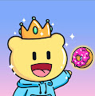 Gummies Gang - Official 一个由 6969 个社区驱动的项目在以太坊上随机生成高度耐嚼的 NFT。每个 Gummies 都让持有者可以轻松访问未来的版本，并让您进入 Gummies Gang！超过 169 种以上的特性
Gutter Cat Gang 欢迎来到天沟。Gutter Cats 是以太坊区块链上 3,000 个随机生成的 NFT 的集合，它们兼作 Gutter Cat Gang 的会员代币。Gutter Cats 代表 GCG 的首要会员级别，解锁不同级
Gutter Clones 为了继续 GCG 在自治区和元宇宙中的主导地位，Gang 领导层责成顶尖科学家通过克隆现有居民来扩大 Gutter 的人口。 在 Gutter Juice NFT 由 Clone Machine 处理后，Gutter Clone 就变
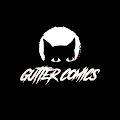 Gutter Comics Tales From The Gutte是一个标记化的漫画封面 NFT，由 Tom Velez 绘制，用于 Gutter Cat Gang 的第一部漫画。The Tales From The Gutter 封面 NFT 包含 9 种不同的稀有物品，未来的实用程序
Gutter Dogs 欢迎来到天沟。Gutter Dogs 是以太坊区块链上 3,000 个随机生成的 NFT 的集合，它们兼作 Gutter Cat Gang 的会员代币。Gutter Dogs 代表 GCG 的基本会员级别，可解锁不同
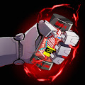 Gutter Juice 为了让 GCG 继续在自治区和元宇宙中占据主导地位，帮派领导层要求顶尖科学家通过克隆现有居民来扩大 Gutter 的人口。科学家们从 Gutter City 的每个成员身上收集了 DNA 样本
Gutter Pigeons 欢迎来到天沟。Gutter Pigeons 是以太坊区块链上 3,000 个随机生成的 NFT 的集合，它们兼作 Gutter Cat Gang 的会员代币。Gutter Pigeons 代表 GCG 的基本会员级别，解锁不同且
Gutter Rats 欢迎来到天沟。Gutter Rats 是以太坊区块链上 3,000 个随机生成的 NFT 的集合，它们兼作 Gutter Cat Gang 的会员代币。Gutter Rats 代表 GCG 的基本会员级别，解锁不同级
Gutter Species Mint Pass 欢迎来到 Gutter，这是一个地下 web3 社交俱乐部，您的 NFT 兼作 Gutter Cat Gang 的会员代币。 Gutter Rats、Pigeons 和 Dogs 代表 Gang 的基础级别成员，Gutter
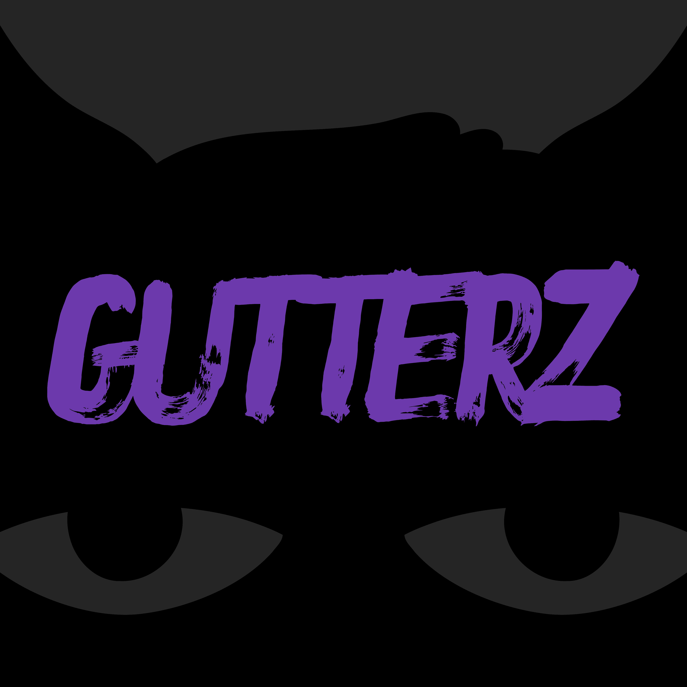 Gutterz Gutterz 是一个免费的 NFT 致敬系列，专为 OG Gutter Cat Gang 持有人制作。 ▶ 什么是Gutterz？ Gutterz 是一个 NFT（非同质代币）集合。存储在区块链上的数字艺术品集合。
GW Daitona Drop [SOLD OUT secondary market on gen.watch] 这是官方的 Gen Watch Drop 页面。单击下面的唯一项目。在列表下，您将能够在手表上线后铸造手表。今天 [1 月 25 日] 将有 25 只 OHMega Speedmeista 手表可供铸造。 Generative Watches 将是一个由 1,000 个
Gyangu NFT ▶ 什么是 Gyangu NFT？ Gyangu NFT 是一个 NFT（不可替代代币）集合。存储在区块链上的数字艺术品集合。 ▶ Gyangu NFT 代币有多少？ 总共有 4500 个 Gyangu NFT NFT。目前 2300 位所有
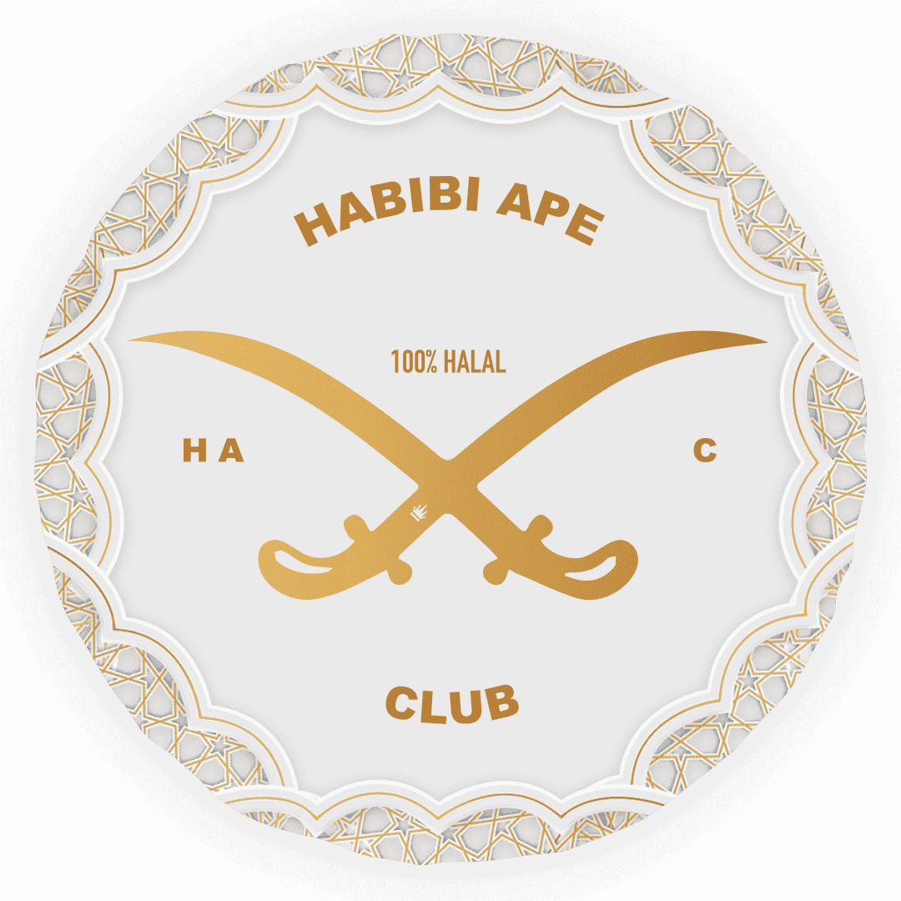 Habibi Ape Club ▶ 什么是哈比比诗？ Habibi Ape Club 是一个 NFT（非同质代币）集合。存储在区块链上的数字艺术品集合。 ▶ 有多少 Habibi Ape Club 代币？ 总共有 4400 个 Habibi Ape Club NFT。目前 1800 位
Hall Of Fame Goat Lodge V2 欢迎来到山羊小屋！加入 NFT 名人堂，成为 GOAT。NFT 可作为 2022 年第一季度在拉斯维加斯举行的全球首个 NFT 音乐节的访问令牌。在元界中享受空投、社区以
HalloweenBears 万圣节熊是以太坊区块链上 10,000 个随机生成的 NFT 的集合。Stealth 于 2021 年 10 月 12 日启动。熊通过 DAO 和睦相处，允许其遥远的表亲寻求庇护。该团队将无休止
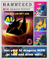 Hammered Dragon Winery 首先，NFT 附带 AI 系统的情况极为罕见。HDW 龙将能够与它的主人聊天 - 想象一下这有多酷！ 我们也觉得很少有 NFT 社区以 NFT 集成的在线游戏为特色。在我们